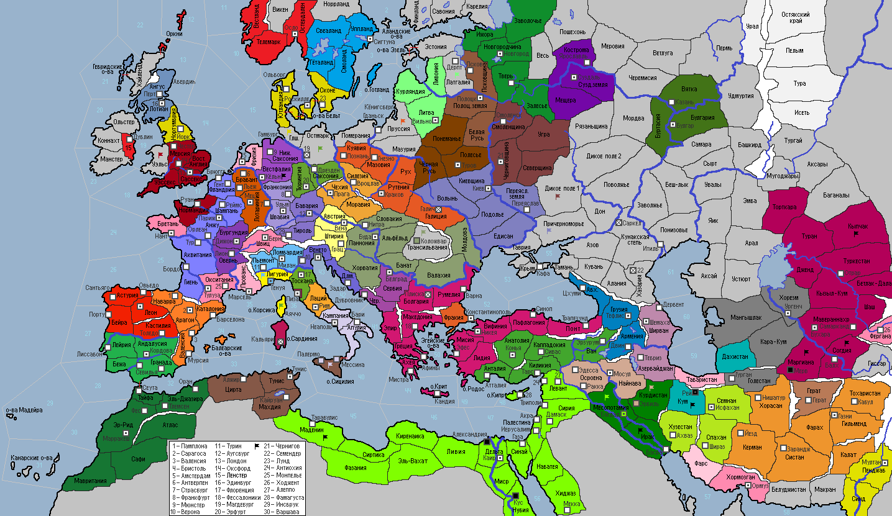

<== | 1 | | 2 | | 3 | | 4 | | 5 | | 6 | | 7 | | 8 | | 9 | | 10 | | 11 |
Государство Хорезмшахов
В середине XI века в результате распада государства сельджуков и обострения внутренних противоречий в Караханидском ханстве происходит возрождение огузской династии Ануштегинидов и создание ими государства Хорезмшахов на территории современного Туркменистана. [появляется фракция Хорезм с центром в г.Ургенче]
· Армия Новгородского княжества, помогая своему вассалу, выпроваживает пришлых варваров из провинции Кострома. · Страдавшие под тяглом данов англосаксонские рабы подняли мятеж и захватили г.Йорк. · Евреи бежали из осажденного ломбардами г.Генуя. Дож Энрике Орсо потребовал у городского Совета чрезвычайных полномочий и принял титул герцога. · Вахтангу I, принявшему трон Грузии, пришлось столкнуться с новой волной вторгнувшихся с севера варваров. В сражении при Цхуми грузины нанесли поражение вдвое превосходившим им силам врагов. · Родриго I Беспомощный стал новым монархом Кастилии. · Климент II – новый римский понтифик. · Союз Караханидов, Буидов и Газневидов заключает «белый» мир с Ширваном. Подписание мирного соглашения вызвало разногласия между маликом буидов Каей I и его восточными союзниками, что послужило причиной разрыва союзнических отношений с ним со стороны Караханидов и Газневидов. · Король Польши Володимер I Хитрый вторгается в Пруссию и разбивает племена пруссов. · София Вельф, не смотря на молодость лет, стала герцогиней баварской. · Шведы совершают налёт на Ижору. · Рустем I Прокаженный взошёл на трон Газневидского гос-ва. Армия смогла подавить мятежи в Кермане и захватить г.Йезд. Таджикская династия Гуридов откалывается от страны и основывает собственное государство с центром в г.Герат. · Вождь литовцев Войшелк погибает на охоте…Не смотря на это литовцы атакуют латгалов и разбивают их армию. · Апулийский герцог Роберт I вторгается на о.Сицилия и захватывает Палермо и Мессину. Флот предпринимает попытку сходу овладеть г.Тунис, но норманнской прыти агрессору не хватило: десант был разбит силами малика Омара I Благословенного. · Рахима стала правительницей Альморавидского маликата. Войска подавили очаги сопротивления рабов и восстановили порядок в Мавритании и г.Оране. · Суздальцы совершают неудачный завоевательный поход в Меровию. · Мосул вместе с сюзереном – Фатимидским султанатом – объявляют войну Буидам. Армия Мосула врывается в Курдистан и берет штурмом г.Эрбиль. · Гарольд I наследует трон Англии. Смена правителя стала отличным предлогом нарушить длительное перемирие между валлийскими кланами и королевством: валлийцы захватывают Мерсию! Английская армия под предводительством полководца Уилмера контратакует, освобождая Мерсию, а затем, преследуя врага, добивает его в Уэльсе. · Войска Ломбардии, возглавляемые кастильским капитаном Диего, захватывают г.Генуя. Тяжелый штурм удался благодаря венецианскому лесу, из которого ломбардцы соорудили осадные башни. Так, ломбардскими руками, торговая республика избавилась от конкурента. · Всеслав I после смерти матери Ольги становится великим князем черниговским. Дружина великого князя разбивает половецких князьков в Диком поле. · Племена Мангышлака присягают на верность правителю Хорезма. · Герцог Лотарингии Боэмунд Кроткий с детства мечтал о королевской короне. С этой целью он решил захватить Фризию, но эмиссары императора СРИ напомнили герцогу, что по закону войны внутри империи запрещены. · Рабы захватывают Маденин! Крупное восстание религиозных фанатиков в г.Александрии! Фатимидские войска захватывают Месопотамию и берут штурмом г.Багдад. · Луи II наследует трон Франции. Новый монарх решает расширить свои пределы за счёт соседней Бретани. В 1050 году французы терпят разгромное поражение от армии бретонского полководца Гурвана. · Швабские войска были призваны архиепископом Вестфалии для подавления мятежа знати, но швабы посчитали нарушением рыцарского кодекса чести вмешательство во внутренние дела собрата по СРИ. · Мятеж в г.Гурган приводит к отпадению Голестана в пользу государства Хорезмшахов. Табаристан возрождается вновь. Хузестан входит в державу Дештидов. Зороастрийцы провинции Фарс заявляют о своей независимости.